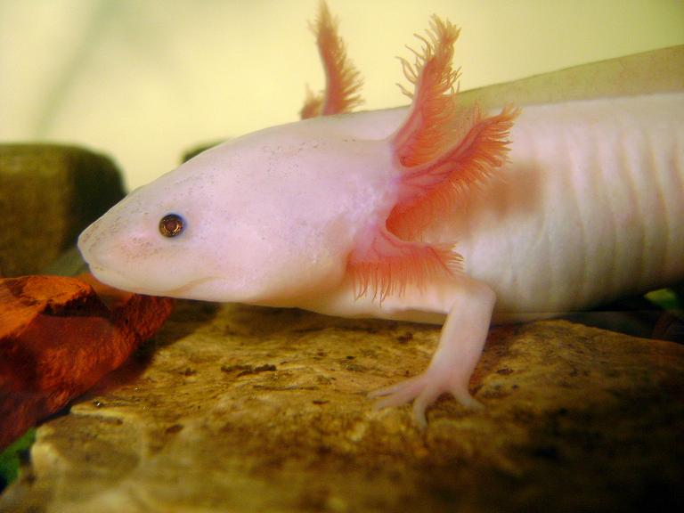
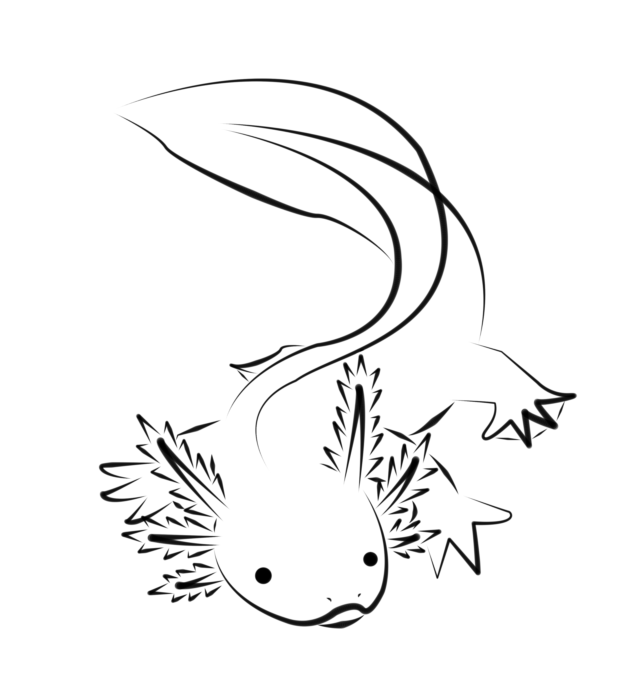

Week 6
Ruby Classes : Modeling the Axolotl Object
11/30/2015
This is an axolotl.  Also called the Mexican walking fish, the axolotl is a species of salamander that never loses its juvenile gills and spends its entire life cycle in an aquatic habitat. The one pictured above is named Maxolotl, and she is a leucistic (part-albino) female. Just look at how cute she is, with her tiny feet and her pinky gills! Max has been living with me since 2011.
Today we're going to learn about Ruby classes and Max is going to help us. Imagine we wanted to model an axolotl in Ruby. It would have some traits: species name, given name, color (wildtype [brown], leucistic, full albino or golden), age, and favorite food, to start. It would have some behaviors, #eat (of course), #swim, #bump (into the glass) (axolotls don't really get up to much). And we would want to be able to model more than one axolotl without rewriting everything all over again. Enter Ruby classes.
In Ruby, a class defines an object: in this case: we're going to define the Axolotl object. Every object in Ruby is an instance of a class. A class is like a bundle of related methods (behaviors) and properties that are shared between different instances of that class (different instances of that object).
To create a class in Ruby you use the class keyword and end it with the end keyword. By convention clas names are capitalized.
end
def initialize(name, age, favorite_food)
@species = "Ambystoma mexicanum"
@name = name
@age = age
@favorite_food = favorite_food
end
end
So let's give our axolotl some behaviors. We can do this by defining some methods. We're going to create three methods here, #swim, #bump, and #eat. #swim and #bump are going to be quite similar and very simple.
def initialize(name, age, favorite_food, color)
@species = "Ambystoma mexicanum"
@name = name
@age = age
@favorite_food = favorite_food
@color = color end
def swim
puts "#{name} is swimming along happily!" end
def bump
puts "#{name} is heading right for the glass!"
puts "Oh no!"
puts "BUMP!"
end
end
if food == @favorite_food
puts "YUM!! MY FAVORITE"
else
puts "Eh, I guess I'll eat this."
end
Finally, we want to be able to read back the values in @age, @species, @favorite_food, and @color, and to be able to read and change the value of @name. We could write methods to do this but if we just want to read and/or write values of instance variables in Ruby classes there's an easier way: the attr methods.
- attr_reader is a reader/getter method that allows you to read an instance variable
- attr_writer is a writer/setter method that allows to to rewrite an instance variable
- attr_accessor is an accessor method that allows you to do both
attr_reader :color, :age, :favorite_food, :species
attr_accessor :name
def intialize(name, age, favorite_food)
...
...
attr_reader :color, :age, :favorite_food, :species
attr_accessor :name
def initialize(name, age, favorite_food, color)
@species = "Ambystoma mexicanum"
@name = name
@age = age
@favorite_food = favorite_food
@color = color end
def swim
return "#{name} is swimming along happily!" end
def bump
return "#{name} is heading right for the glass! BUMP!!"
end
def eat(food)
if food == @favorite_food
return "YUM!! MY FAVORITE"
else
return "Eh, I guess I'll eat this."
end
end
max.name
=> "Maxolotl"
max.name = "Miss Maxolotl"
max.name
=> "Miss Maxolotl"
max.eat("earthworms")
=> "YUM!! MY FAVORITE"
sammy = Axolotl.new("Samulotl L. Jackson", 1, "guppies", "golden")
Well I hope you enjoyed reading this introduction to classes in Ruby and meeting Maxolotl. If you have any quetions about this material feel free to contact me at any time! Thanks for reading! 